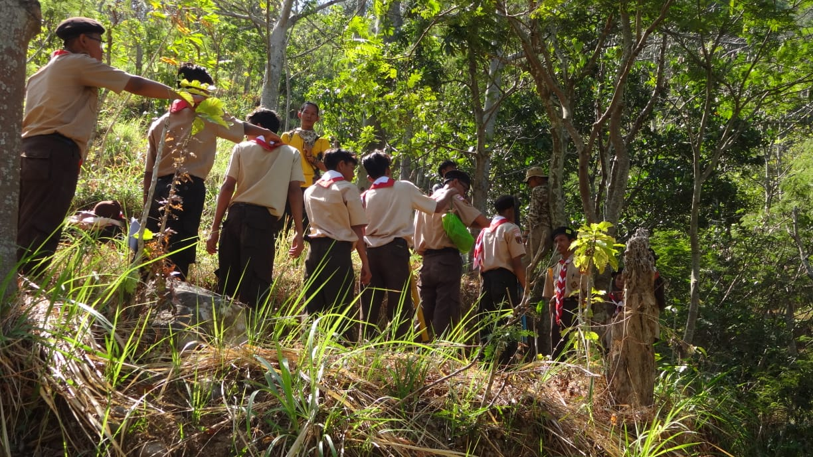

Pramuka
Siaga (usia 7-10 tahun)
Penggalang (usia 11-15 tahun)
Penegak (usia 16-20 tahun)
Pandega (usia 21-25 tahun)
Rabu, 21 Agustus 2019

Apa yang dimaksud dengan pramuka? Pengertian Pramuka adalah semua anggota gerakan Pramuka Indonesia yang terdiri dari beberapa tingkatan, mulai dari Pramuka Siaga, Penggalang, Penegak, dan Pandega. Pramuka adalah singkatan dari Praja Muda Karana, yang artinya Rakyat Muda yang Suka Berkarya. Adapun tingkatan anggota gerakan Pramuka adalah terdiri dari;
Sedangkan pengertian gerakan Pramuka Indonesia adalah suatu organisasi pendidikan non formal yang menjadi wadah dalam melaksanakan pendidikan kepanduan yang dilaksanakan di Indonesia.
Kegiatan Kepramukaan biasanya dilakukan di alam terbuka dimana terdapat aktivitas yang menyenangkan, menarik, sehat, terarah, sesuai dengan prinsip dasar dan metode kepramukaan.